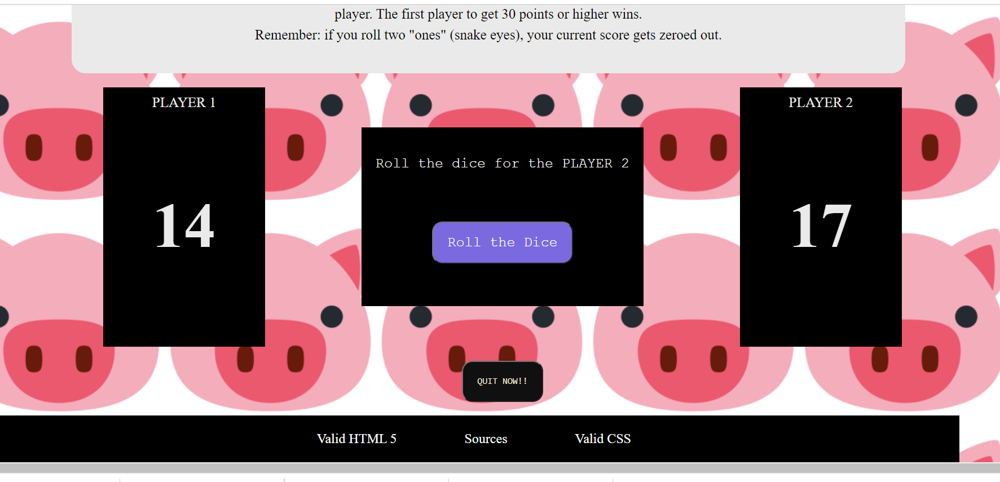
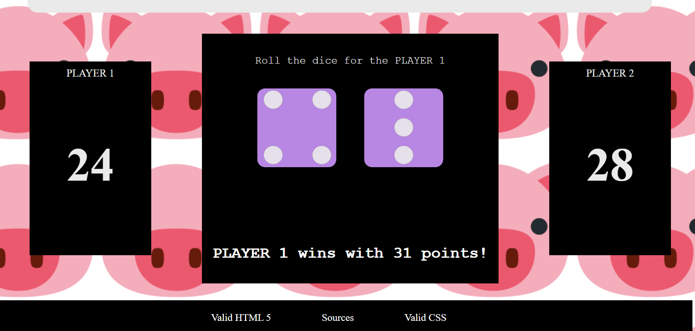

Test-Result
For the final project, I decided to improve my PIG game. I feel I can explore more with this game and learn how to portray score. I showed my game to 3 peers today and they really helped me understand what is working and what is not. The overlay was readable and easy to follow- My peers sugeested that it would have been a nice touch if I made the two players' scoreboard a different color to help distinguish between them or made the middle game interface change color once the player changed. When the plaers wins, the font was a little bit small and I will fix that for the final. Overall, I feel I have to make some minir changes and my game will be ready for the final.
 